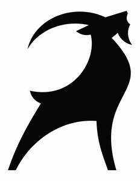
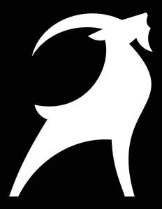

Trade Mark Journal No.2025/026 27 June 2025
UK00004218358 12 June 2025 (18,24,25,28)
Mark 1

Mark 2

- Class 18
- Holdalls for sports clothing; Bags for sports clothing; Sports bags; Bags for sports; Sports packs; Golf umbrellas.
- Class 24
- Golf towels.
- Class 25
- Clothing; Jackets [clothing]; Knitwear [clothing]; Ready-to-wear clothing; Woolen clothing; Gloves [clothing]; Gloves as clothing; Clothes; Jerseys [clothing]; Shorts [clothing]; Cashmere clothing; Knitted clothing; Windproof clothing; Belts [clothing]; Belts for clothing; Rainproof clothing; Waterproof clothing; Visors [clothing]; Casual clothing; Jackets being sports clothing; Jackets (Stuff -) [clothing]; Bottoms [clothing]; Clothing for leisure wear; Ready-made clothing; Woven clothing; Leisure clothing; Clothing for sports; Sports clothing; Athletic clothing; Tops [clothing]; Weatherproof clothing; Water-resistant clothing; Men's clothing; Sports wear; Clothes for sports; Sports jerseys and breeches for sports; Sports garments; Sports shirts; Sports pants; Sports jackets; Sports clothing [other than golf gloves]; Leisure wear; Sports jerseys; Sports vests; Sports socks; Sports headgear [other than helmets]; Headgear for wear; Clothes for sport; Sport shirts; Casual wear; Articles of sports clothing; Sports caps; Sports caps and hats; Ladies wear; Sport coats; Head wear; Sports shirts with short sleeves; Golf clothing, other than gloves; Linen clothing; Jogging sets [clothing]; Jogging bottoms [clothing]; Clothing for horse-riding [other than riding hats]; Wristbands [clothing]; Gloves for apparel; Golf shirts; Golf trousers; Golf shorts; Golf skirts; Golf caps; Articles of clothing; Rugby shirts.
- Class 28
- Gloves for sports; Golf gloves; Gloves (Golf -); Gloves for golf; Golfing gloves; Cricket bags; Cricket bags [adapted].
Hoxbury